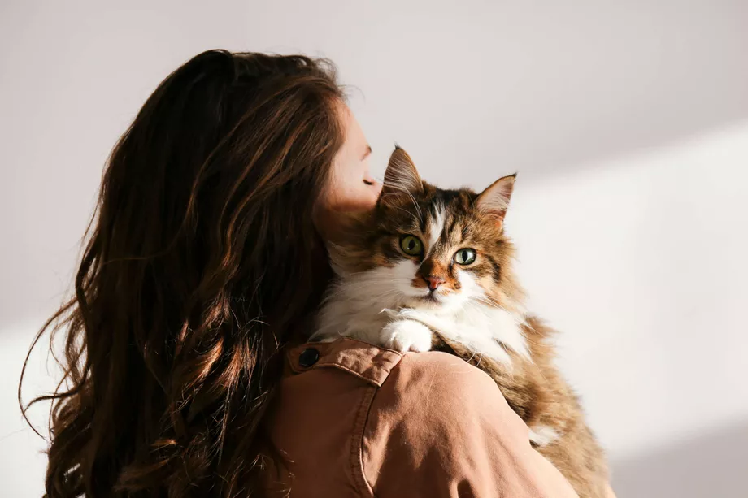
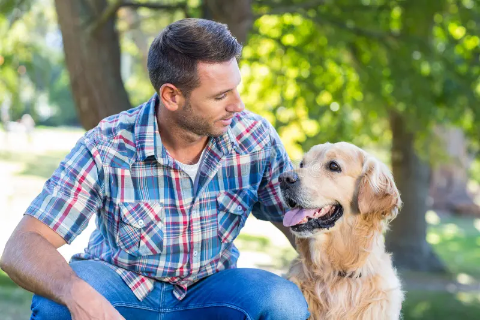

01
Adopta
Conoce a los animales disponibles y postula para entregarles un hogar responsable.
En Huellas & Hogar creemos que cada mascota merece una segunda oportunidad. Conoce a nuestros animales y descubre cómo puedes ser parte de una adopción responsable.

Conectamos mascotas que necesitan un hogar con personas dispuestas a entregarles cuidado, tiempo y cariño.

La adopción responsable considera las necesidades del animal y las posibilidades de la familia. Nuestro propósito es orientar ese encuentro para que se convierta en una relación segura y duradera.
Hay distintas formas de contribuir al bienestar de perros y gatos que necesitan apoyo.
Conoce a los animales disponibles y postula para entregarles un hogar responsable.
Comparte sus historias para que más personas conozcan sus necesidades.
Consulta cómo apoyar con donaciones o voluntariado.
Conoce a nuestros peluditos y descubre quién podría convertirse en parte de tu familia.
Quiero conocerlos